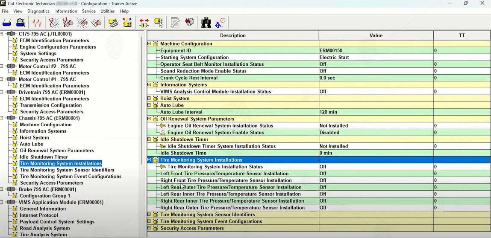
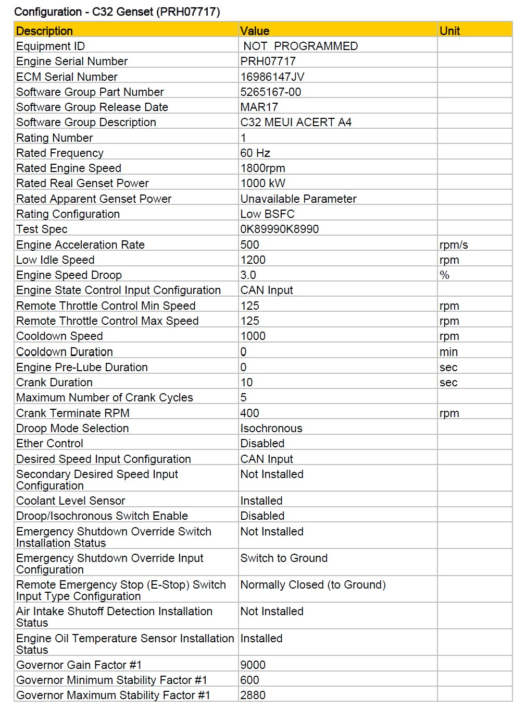
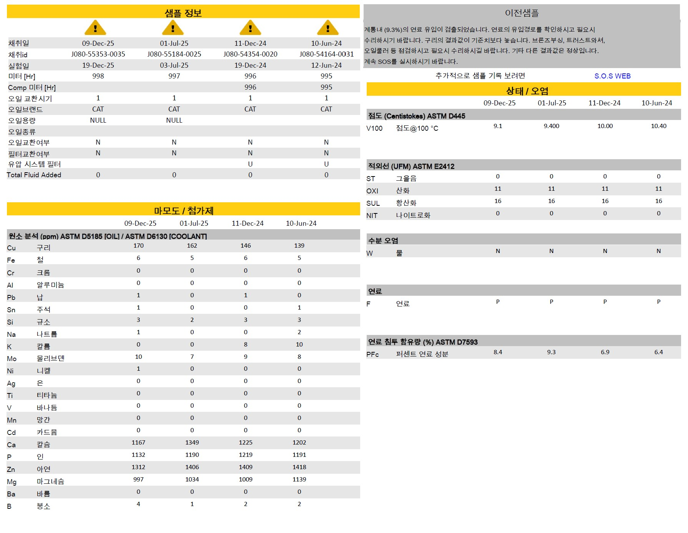
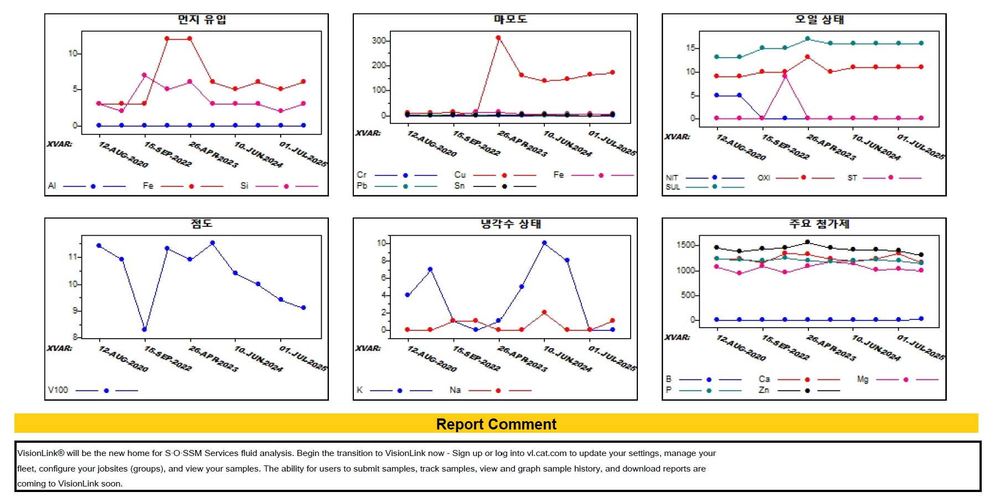
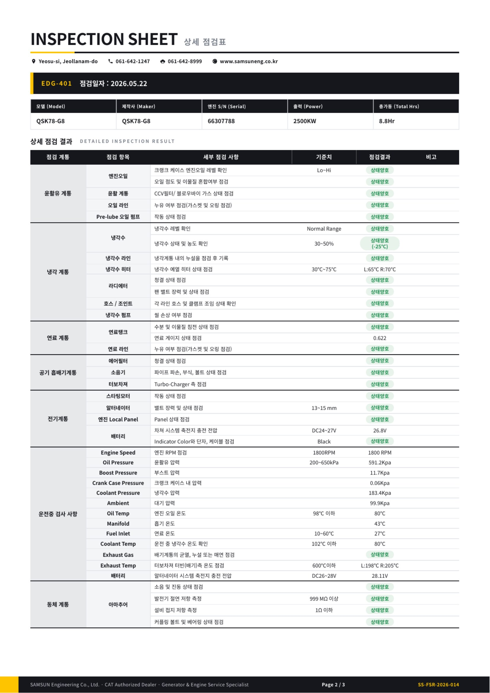
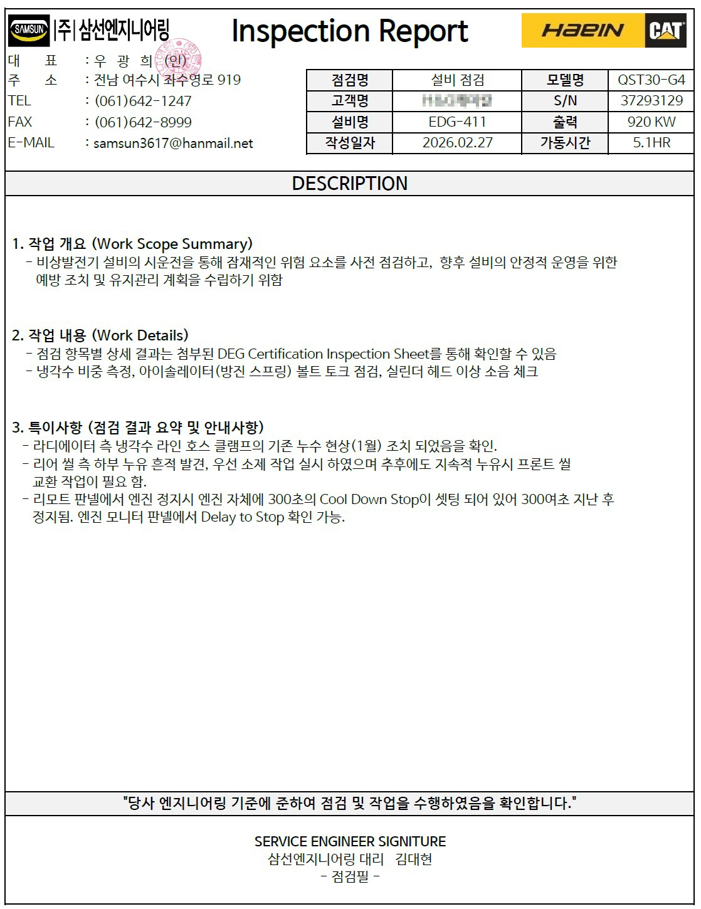

월 1회 단순 무부하 운전만으로는 센서 이상, 윤활 상태, 내부 마모, 오염도, 장기 운전 안정성을 충분히 판단하기 어렵습니다. ㈜삼선엔지니어링은 CAT ET 전자식 진단, SOS 오일 분석, 점검 리포트를 기반으로 비상발전기의 잠재 리스크를 사전에 확인하고 비상 시 신뢰성을 확보합니다.
비상발전기는 평소에는 운전되지 않다가 정전 등 긴급 상황에서만 가동되는 설비입니다. 이런 특성 때문에 일반적인 기동 테스트만으로는 실제 비상 상황에서의 신뢰성을 확보하기 어렵습니다.
일시적인 기동 테스트(Run Test) 중심으로는 엔진 내부의 마모, 연소 상태, 윤활 계통의 이상 등 잠재 위험 요인을 사전에 파악하는 데 한계가 있습니다.
실제 사고로 전원이 중단되는 상황에서, 해당 운전 시간 동안 엔진이 정상 출력과 성능을 안정적으로 유지할 수 있는지에 대한 확인이 일반 점검으로는 불가능합니다.
즉, 기동 확인(Run Test)만으로는 비상 상황에서의 실제 성능 검증이 어려우며, 진단 기반의 정기 점검이 안정적인 설비 운영의 핵심입니다.
단순 기동 확인과 진단 기반 정기점검은 점검 깊이와 확보할 수 있는 데이터의 양이 근본적으로 다릅니다.
삼선엔지니어링의 정기점검은 엔진 주요 계통 전반을 진단 기반으로 점검합니다.
연료 / 윤활 / 냉각 등 주요 계통 전반의 기능 및 이상 유무를 확인합니다.
필터류, 벨트류 등 소모품의 열화 상태 및 교체 필요성을 점검합니다.
ECU 데이터 기반으로 엔진 운전 상태 및 비정상 패턴을 진단합니다.
오일 내 금속 성분 및 오염도 분석을 통해 내부 마모 상태를 진단합니다.
기동 및 운전 중 주요 파라미터(온도, RPM 등)를 점검합니다.
고객사 요구사항에 따라 항목별 추가 점검을 유연하게 수행합니다.
Caterpillar 공식 분석 도구를 활용하여 엔진 내부 상태를 정밀하게 진단합니다.
Caterpillar Electronic Technician(ET)은 CAT 엔진의 ECU(Engine Control Unit)와 직접 통신하여 운전 데이터를 실시간으로 수집·분석하는 공식 진단 소프트웨어입니다.


Scheduled Oil Sampling(SOS)은 엔진 오일의 화학적·물리적 상태를 정밀 분석하여 엔진 내부의 마모 상태와 오염도를 진단하는 Caterpillar의 공식 오일 분석 프로그램입니다.


단순 점검에서 진단 기반 관리 체계로의 전환은 비용 절감과 운영 안정성을 동시에 가져옵니다.
CAT 공식 권장 기준에 따른 EPG(Emergency Power Generator) Standby 모드 유지보수 주기입니다. 윤활·연료·공기·냉각 4대 시스템별로 정리되어 있습니다.
삼선엔지니어링은 정기점검 후 표준화된 양식의 점검 시트와 Inspection Report를 제공합니다. 모든 점검 항목은 고객사 요구사항에 맞게 수정 가능합니다.

윤활/냉각/연료/공기 흡배기/전기 계통 및 운전중 검사사항 등 모든 점검 항목별 기준치와 점검 결과가 명확하게 기록됩니다.

작업 개요, 점검 내용, 특이사항 등 점검 결과를 정리한 공식 리포트. 서비스 엔지니어 서명과 함께 발행되어 이력 관리의 근거 자료가 됩니다.
여수 본사 기반, 전국 출장 점검 가능. 보유 설비·점검 주기·현장 환경에 맞춰 맞춤형 점검 계획을 제안해드립니다.